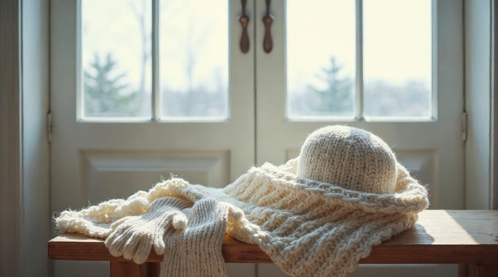
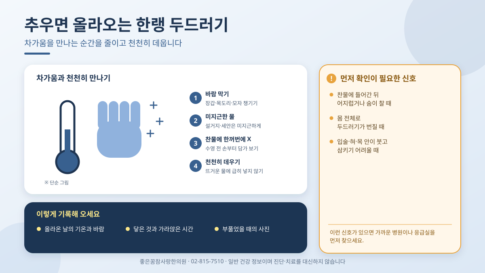

이종호 한의사 감수좋은꿈참사랑한의원 대표원장 (한의사 면허번호 19769)발행 2026-11-26 · 수정 2026-11-26
이 글의 차례
아침 출근길, 버스 정류장에서 십 분쯤 서 있다가 사무실에 들어옵니다. 따뜻한 실내에서 장갑을 벗는 순간 손등이 울퉁불퉁 부풀어 있고, 볼과 귀가 화끈거리며 가렵습니다. 커피를 한 모금 마시고 나니 어느새 가라앉아 있어 '내가 잘못 봤나' 싶기도 합니다.
진료실에서 이런 이야기를 들으면 저는 먼저 "찬 것에 닿은 자리에만 그런가요?"라고 여쭙니다. 찬물로 설거지를 한 손, 찬 바람을 맞은 얼굴, 차가운 음료를 마신 뒤의 입술처럼 차가움이 닿은 곳에만 부풀어 오른다면 한랭 두드러기를 먼저 떠올려 볼 수 있습니다.
한랭 두드러기는 이름은 낯설어도 생각보다 흔합니다. 다만 금방 사라지다 보니 대수롭지 않게 넘기거나, 겨울마다 피부가 예민해서 그렇다고만 여기며 지내는 분이 많습니다. 어떤 상황에서 올라오는지 알아 두면 겨울을 훨씬 편하게 지낼 수 있습니다.
이 글에서는 한랭 두드러기가 어떤 모습으로 나타나는지, 다른 겨울 피부 불편과 어떻게 다른지, 진료실에서 무엇을 여쭙고 생활에서는 무엇을 해 볼 수 있는지를 차례로 정리했습니다.
한랭 두드러기는 어떤 모습으로 나타나나요
한랭 두드러기는 피부가 차가움에 닿은 뒤, 특히 다시 따뜻해지는 무렵에 그 자리가 붉게 부풀고 가려워지는 모습으로 나타납니다. 모기 물린 자리처럼 볼록하게 솟거나, 넓게 판처럼 붓기도 합니다. 대개 수십 분에서 몇 시간 안에 흔적 없이 가라앉습니다.
흔히 보는 장면은 이렇습니다. 찬 바람을 맞은 얼굴과 귀, 장갑 없이 다닌 손등, 찬물로 씻은 손, 얼음물을 마신 뒤 입술과 입안, 겨울 바다나 찬 수영장에 들어간 뒤 몸 전체입니다. 같은 추위라도 바람이 세거나 젖은 상태로 찬 공기를 맞으면 더 잘 올라오기도 합니다.
가려움과 함께 화끈거림이나 따끔함을 느끼는 분이 많고, 손이 붓다 보니 주먹을 쥐기 뻣뻣하다고 말씀하시기도 합니다. 넓은 면적이 한꺼번에 차가워지면 피부뿐 아니라 몸 전체가 나른하거나 머리가 무겁게 느껴질 수 있어, 그런 경험이 있었는지도 함께 여쭙습니다.
왜 찬 것에 닿으면 피부가 부풀어 오를까요
피부 속에는 비만세포라는 세포가 있어서, 자극을 받으면 히스타민 같은 물질을 내보냅니다. 이 물질이 가까운 혈관을 넓히고 혈관 벽을 느슨하게 만들면 물기가 피부 쪽으로 빠져나와 볼록하게 붓고, 신경을 건드려 가려움이 생깁니다. 이것이 두드러기의 기본 모습입니다.
한랭 두드러기는 이 반응을 일으키는 방아쇠가 '차가움'이라는 점이 다릅니다. 왜 어떤 분은 찬 자극에 유난히 예민하게 반응하는지는 아직 다 밝혀지지 않았습니다. 감기나 장염 같은 감염을 앓고 난 뒤 시작되었다고 말씀하시는 분도 있고, 뚜렷한 계기 없이 어느 겨울부터 생겼다는 분도 계십니다.
대부분은 피부의 예민함 자체가 원인이지만, 드물게 다른 병이 함께 있을 때 찬 것에 반응하는 경우도 있습니다. 그래서 두드러기 말고도 열, 체중 변화, 관절 통증처럼 다른 변화가 함께 있다면 내과나 피부과에서 검사를 받아 보시도록 안내합니다.
한의학에서는 겉을 지키는 기운이 약해져 찬 바람과 찬 기운이 쉽게 피부에 닿는다는 식으로 설명해 왔습니다. 이것은 진단명이 아니라, 진찰할 때 몸이 추위를 얼마나 타는지, 땀과 피로는 어떤지를 함께 살피기 위한 전통적인 표현입니다.
다른 겨울 피부 불편과는 어떻게 다른가요
겨울에는 피부가 붉어지고 가려운 일이 여러 가지로 생겨서 헷갈리기 쉽습니다. 몇 가지를 나란히 놓아 보면 구분하는 데 도움이 됩니다.
- 건조로 인한 가려움: 정강이나 등처럼 넓은 곳이 하얗게 일어나고, 부풀어 오르기보다 꺼칠합니다. 하루 종일 이어지고 금방 사라지지 않습니다.
- 동창: 손가락이나 발가락 끝이 보랏빛이나 붉은빛으로 붓고, 가려움과 화끈거림이 며칠에서 몇 주까지 이어집니다.
- 찬바람에 볼이 붉어지는 것: 얼굴이 빨개지고 따갑지만 볼록하게 솟지는 않으며, 실내에 들어와 천천히 가라앉습니다.
- 피부묘기증: 긁거나 누른 자리를 따라 줄 모양으로 부풀어 오르며, 추위와 상관없이 생깁니다.
한랭 두드러기는 '차가움에 닿은 자리'에 '볼록하게 부풀었다가' '몇 시간 안에 사라진다'는 세 가지가 함께 있을 때 의심해 볼 수 있습니다. 판단이 어려울 때는 부풀어 있을 때의 사진이 가장 좋은 단서가 됩니다.
집에서 해 볼 수 있는 간단한 확인
피부과에서는 얼음을 비닐에 싸서 팔 안쪽에 몇 분 대 보는 검사를 하기도 합니다. 얼음을 뗀 뒤 피부가 다시 따뜻해지면서 그 자리가 네모나게 부풀어 오르면 차가움에 반응하는 피부라고 판단하는 데 참고가 됩니다.
집에서 비슷하게 해 보고 싶으시다면 짧게, 좁은 자리에만 해 보세요. 얼음을 손수건에 싸서 팔 안쪽에 잠깐 대 보고, 이후 십 분 정도 그 자리를 지켜보는 정도면 충분합니다. 반응이 크게 나왔던 경험이 있는 분은 집에서 따로 시험하지 마시고, 진료실이나 피부과에서 상의해 주세요.
확인보다 더 쓸모 있는 것은 생활 속 기록입니다. 언제 올라왔는지, 그때 기온과 바람은 어땠는지, 무엇에 닿았는지, 얼마 만에 가라앉았는지를 사진과 함께 남겨 두시면 진료실에서 훨씬 정확하게 이야기를 나눌 수 있습니다.
한랭 두드러기를 두고 자주 헷갈리는 것
첫째, 겨울에만 생기는 일이라는 생각입니다. 실제로는 한여름에도 에어컨 바람을 정면으로 맞거나, 땀에 젖은 몸으로 찬 실내에 들어가거나, 얼음물을 단숨에 마신 뒤에 올라오는 분이 계십니다. 계절보다 '차가움을 만난 순간'을 기준으로 살펴보시는 것이 좋습니다.
둘째, 피부가 약해서 생기는 일이니 참으면 된다는 생각입니다. 가볍게 지나가는 경우가 많은 것은 맞지만, 넓은 면적이 한꺼번에 차가워질 때는 반응도 커질 수 있습니다. 어느 정도의 추위에서, 어느 범위까지 올라오는지 알아 두는 것이 스스로를 지키는 방법입니다.
셋째, 뜨겁게 데우면 빨리 가라앉는다는 생각입니다. 차가워진 손을 뜨거운 물에 바로 넣거나 난로에 바짝 대면 피부가 한 번 더 자극을 받습니다. 실내에서 천천히, 미지근한 온도로 데우는 쪽이 피부에 덜 부담스럽습니다.
먼저 이렇게 여쭙니다
처음 오시면 저는 대략 이런 순서로 여쭙니다. 미리 생각해 오시면 이야기가 수월해집니다.
- 처음 올라온 것은 언제였고, 그 무렵 감기나 장염을 앓으셨나요?
- 찬 바람, 찬물, 찬 음료 가운데 무엇에 가장 잘 반응하나요?
- 올라온 뒤 가라앉기까지 얼마나 걸리나요?
- 입술이나 눈꺼풀이 붓거나, 몸 전체가 나른해진 적이 있나요?
- 찬물에 몸을 넓게 담갔을 때 반응이 커진 적이 있나요?
- 지금 드시는 약, 영양제, 최근 바꾼 세제나 화장품이 있나요?
추위를 얼마나 타는지, 손발이 늘 찬지, 땀은 많은지 적은지, 쉽게 지치는지도 함께 여쭙습니다. 이런 이야기들은 피부만 따로 보지 않고 몸 전체의 흐름을 함께 살피기 위한 것입니다.
일상에서 먼저 해 볼 수 있는 것
한랭 두드러기는 차가움을 만나는 순간을 줄이고, 만나더라도 천천히 만나게 하는 것이 생활 관리의 중심입니다. 거창한 방법보다 작은 습관이 겨울을 편하게 만들어 줍니다.
- 외출할 때 장갑, 목도리, 귀를 덮는 모자로 바람이 직접 닿는 자리를 줄이기
- 설거지와 손빨래는 미지근한 물로, 고무장갑 안에 면장갑을 끼고 하기
- 얼음을 넣은 음료와 아주 찬 아이스크림은 한 번에 많이 드시지 않기
- 겨울 바다나 찬 수영장처럼 찬물에 몸을 한꺼번에 담그는 일은 피하기
- 젖은 머리나 땀에 젖은 옷으로 찬 바깥에 나가지 않기
- 실내외 온도 차가 큰 곳을 드나들 때는 현관에서 잠시 몸을 적응시키기
수영을 좋아하시는 분이라면 물 온도가 어느 정도일 때 반응이 있었는지를 먼저 적어 보세요. 미리 손이나 팔만 물에 담가 보고 반응을 살핀 뒤 들어가는 습관도 도움이 됩니다. 반응이 컸던 적이 있다면 수영을 계속할지는 담당 선생님과 상의해 정하시는 것이 좋습니다.
가려운 자리를 세게 긁으면 부기가 더 커지고 피부에 상처가 남을 수 있습니다. 가려울 때는 손바닥으로 가볍게 눌러 주거나, 따뜻한 실내에서 천천히 가라앉기를 기다려 주세요. 뜨거운 물에 급하게 손을 넣는 것은 피부를 더 자극할 수 있습니다.
잠과 피로도 함께 살펴 주세요. 잠을 설치고 일이 몰리는 시기에는 같은 추위에도 두드러기가 더 쉽게, 더 넓게 올라온다고 말씀하시는 분이 많습니다. 겨울에는 평소보다 잠드는 시각을 조금 당기고, 끼니를 거르지 않는 것만으로도 피부가 한결 덜 예민해지는 것을 느끼실 수 있습니다.
병원 진료와는 어떻게 함께 가나요
피부과나 알레르기 내과에서는 얼음 검사로 반응을 확인하고, 필요하면 혈액 검사로 다른 원인이 없는지 살펴봅니다. 가려움과 부기를 줄이는 항히스타민제를 처방받기도 합니다. 처방받은 약은 처방한 선생님의 안내대로 이어 가시고, 혼자 늘리거나 멈추지 않으셔야 합니다.
한의원 진료는 이런 진료를 대신하는 것이 아니라 나란히 갑니다. 병원에서 원인 확인과 약을 챙기고, 한의원에서는 추위를 타는 몸, 잠과 피로, 소화처럼 피부 반응과 함께 움직이는 몸 전체의 흐름을 살핀다고 생각해 주시면 됩니다.
병원에 가실 때도 사진과 기록은 큰 힘이 됩니다. 몇 도쯤의 날씨에서, 몇 분쯤 찬 바람을 맞았을 때 올라왔는지를 말씀하시면 검사와 약을 정하는 데 참고가 됩니다. 같은 기록을 한의원에도 가져오시면 두 곳에서 같은 그림을 보며 이야기할 수 있습니다.
한의원에서 함께 살필 수 있는 경우
- 겨울마다 찬 바람에 얼굴과 손이 부풀고 가려운 일이 반복되는 경우
- 손발이 늘 차고 추위를 유난히 타면서 두드러기가 함께 올라오는 경우
- 피로가 쌓이거나 잠이 부족할 때 두드러기가 더 잦아지는 경우
- 병원 약을 드시면서 생활 관리와 몸의 흐름을 함께 살피고 싶은 경우
좋은꿈참사랑한의원에 오시면 먼저 아래 '먼저 확인이 필요한' 신호가 없는지부터 봅니다. 그다음 맥을 짚고, 손발의 온도와 피부 상태, 사진 속 두드러기 모양을 함께 살핍니다. 땀, 잠, 소화, 대소변처럼 몸 전체의 흐름도 여쭙습니다.
진찰한 내용을 바탕으로 생활에서 바꿔 볼 것 하나와 함께 침, 온열 관리, 한약 상담 가운데 지금 상태에 맞는 것을 정합니다. 한약을 상의할 때는 드시는 약을 모두 확인한 뒤 신중하게 정하고, 임신 중이시거나 임신 가능성이 있다면 먼저 알려 주시고 산부인과와도 상의해 주세요.
이렇게 기록해 오시면 상담이 쉬워집니다
두드러기는 사라지고 나면 설명하기가 어렵습니다. 2주 정도만 간단히 적어 보세요.
- 올라온 날짜와 시각, 그때의 기온과 바람
- 닿았던 것: 찬 바람, 찬물, 찬 음료, 수영 등
- 올라온 자리와 크기, 가능하면 사진
- 가라앉기까지 걸린 시간
- 그 무렵의 잠, 피로, 감기 기운
- 드신 약과 그 뒤의 변화
기록이 모이면 어떤 상황을 피하면 되는지, 어떤 날 더 조심하면 되는지가 보이기 시작합니다. 그것이 겨울을 편하게 보내는 첫 실마리가 됩니다.

겨울을 조금 더 편하게
한랭 두드러기는 겨울이 올 때마다 마음을 쓰게 만들지만, 언제 올라오는지 알고 나면 피할 수 있는 순간도 꽤 많습니다. 장갑 한 켤레, 미지근한 설거지물, 현관에서의 짧은 적응 시간처럼 작은 준비가 쌓이면 겨울 하루가 한결 가벼워집니다.
두드러기가 올라왔다고 해서 겨울 산책이나 바깥 나들이를 모두 포기하실 필요는 없습니다. 옷차림과 시간대를 조금 조정하고, 찬 바람이 덜한 낮 시간을 고르는 것만으로도 충분히 즐길 수 있는 경우가 많습니다.
이번 주에는 올라온 순간을 사진으로 한 번만 남겨 보세요. 다음에 오시면 그 사진과 기록을 함께 펼쳐 놓고 이야기를 시작하겠습니다.
이런 증상은 먼저 확인이 필요합니다
- 찬물에 들어간 뒤 어지럽거나 숨이 차고, 몸 전체에 두드러기가 번지는 경우
- 입술, 혀, 목 안이 붓거나 목소리가 변하고 삼키기 어려운 경우
이런 신호가 있으면 한의원보다 가까운 병원이나 응급실을 먼저 찾으세요.
함께 읽으면 좋은 글
- 찬 바람을 쐬거나 찬물에 닿으면 피부가 부풀어 오를 때는 어떻게 살피나요?
- 저녁만 되면 두드러기가 올라왔다 사라지기를 반복할 때는 어떻게 살피나요?
- 겨울 찬바람을 맞고 들어오면 볼이 빨갛게 달아오르고 따가울 때는 어떻게 살피나요?
- 손발이 찬 수족냉증, 레이노·갑상선·빈혈과 어떻게 구분하나요?
- 가려움이 낮에 심한지 밤에 심한지는 왜 묻고, 어떻게 적어 두나요?

여쭙는 것
- 처음 올라온 것은 언제였고, 그 무렵 감기나 장염을 앓으셨나요?
- 찬 바람, 찬물, 찬 음료 가운데 무엇에 가장 잘 반응하나요?
- 올라온 뒤 가라앉기까지 얼마나 걸리나요?
생활에서 해 볼 것
- 외출할 때 장갑, 목도리, 귀를 덮는 모자로 바람이 직접 닿는 자리를 줄이기
- 설거지와 손빨래는 미지근한 물로, 고무장갑 안에 면장갑을 끼고 하기
- 얼음을 넣은 음료와 아주 찬 아이스크림은 한 번에 많이 드시지 않기
한의원에서 함께 살필 것
- 겨울마다 찬 바람에 얼굴과 손이 부풀고 가려운 일이 반복되는 경우
- 손발이 늘 차고 추위를 유난히 타면서 두드러기가 함께 올라오는 경우
- 피로가 쌓이거나 잠이 부족할 때 두드러기가 더 잦아지는 경우
먼저 확인이 필요한 신호
- 찬물에 들어간 뒤 어지럽거나 숨이 차고, 몸 전체에 두드러기가 번지는 경우
- 입술, 혀, 목 안이 붓거나 목소리가 변하고 삼키기 어려운 경우
한눈에 보는 표
| 구분 | 핵심 |
|---|---|
| 여쭙는 것 | 처음 올라온 것은 언제였고, 그 무렵 감기나 장염을 앓으셨나요? 찬 바람, 찬물, 찬 음료 가운데 무엇에 가장 잘 반응하나요? |
| 생활에서 해 볼 것 | 외출할 때 장갑, 목도리, 귀를 덮는 모자로 바람이 직접 닿는 자리를 줄이기 설거지와 손빨래는 미지근한 물로, 고무장갑 안에 면장갑을 끼고 하기 |
| 한의원에서 함께 살필 것 | 겨울마다 찬 바람에 얼굴과 손이 부풀고 가려운 일이 반복되는 경우 손발이 늘 차고 추위를 유난히 타면서 두드러기가 함께 올라오는 경우 |
| 먼저 확인이 필요한 신호 | 찬물에 들어간 뒤 어지럽거나 숨이 차고, 몸 전체에 두드러기가 번지는 경우 입술, 혀, 목 안이 붓거나 목소리가 변하고 삼키기 어려운 경우 |
자주 묻는 질문
한랭 두드러기는 알레르기인가요?
음식이나 꽃가루 알레르기와는 조금 다르게, 차가움이라는 물리적인 자극에 피부가 반응하는 두드러기입니다. 다른 원인이 함께 있는지는 피부과나 내과 검사로 확인해 볼 수 있습니다.
겨울이 지나면 저절로 없어지나요?
따뜻한 계절에는 반응할 일이 줄어 잊고 지내는 분이 많습니다. 다만 여름에도 에어컨 바람이나 찬 음료에 반응할 수 있어서, 계절과 상관없이 어떤 상황에서 올라오는지 적어 두시길 권합니다.
항히스타민제를 먹으면서 한의원 진료를 받아도 되나요?
드시는 약을 알려 주시면 그에 맞춰 진료 방향을 정합니다. 처방받은 약은 처방한 선생님 안내대로 이어 가시고, 한약을 상의할 때는 드시는 약을 모두 확인한 뒤 신중하게 정합니다.
아이도 한랭 두드러기가 생길 수 있나요?
아이에게도 생길 수 있습니다. 찬 음료나 겨울 놀이 뒤에 입술이나 손이 부풀었다면 사진을 찍어 두시고, 소아청소년과와 상의하시면서 생활에서 조심할 점을 함께 정해 보세요.
좋은꿈참사랑한의원은 재진 때 지난번 이야기부터 이어서 여쭙니다. 진료시간과 예약은 오시는 길에서 확인하세요.
어디서 상담받을 수 있나요?
좋은꿈참사랑한의원은 서울 동작구 만양로2길 2 신성빌딩 3층·5층(서울 동작구 상도동, 7호선 상도역 3번 출구 근처)에 있습니다. 한의사 3명(이종호 대표원장, 조영기 수석진료원장, 정원영 진료원장)이 진료합니다. 진료시간은 평일 09:30~20:00(점심 13:00~14:00), 토·일·공휴일 09:30~15:00이며, 방문 전 전화로 확인을 권합니다. 예약은 네이버 예약, 카카오톡 상담, 전화 02-815-7510로 받습니다.
이 글은 일반적인 건강 정보이며 개인의 진단이나 치료를 대신하지 않습니다. 증상이 있거나 복용 중인 약이 있다면 진료를 통해 확인하세요. 치료 효과는 개인마다 다를 수 있습니다.
작성 기준: 일반적으로 알려져 있는 건강 정보를 참고해 정리했습니다(대표원장 감수). 증상 기록은 1~2주 동안 하루 1회, 비슷한 시간에 적어 오시면 지난 상태와 비교하기 쉽습니다.